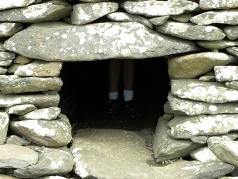

James Olin Oden - Contact
Interviews and reviews:
Elderberry Festival Spot
on
WCHL 97.9 Chapel Hill
Indy Week Review of The Craic is Free
"The State of Things" Interview on WUNC 91.5
Acoustic Muse Radio Interview - Little Raleigh Radio
Licks and Lyrics Interview on WCOM 103.5 for The Craic is Free
Licks and Lyrics Interview on WCOM 103.5 for Samhain's March
Celtic Music Magazine Review of Samhain's March
New Bern, NC - Sun Journal Press Release
Podcasts:
Make It A Double: Irish Craic
Irish and Celtic Music Podcast:
Irish and Celtic Music Podcast #223: Traditional Music with Celtic Root
featureing "Always in Bloom"
Irish and Celtic Music Podcast #156: Open the Gates of Celtic Music
- featuring "The Flip Flop Song"
Irish and Celtic Music Podcast #150: The Craic is Free
- featuring "The Craic is Free"
Irish and Celtic Music Podcast #147: Celtic Halloween
- featuring "Samhain's March Finale"
Irish and Celtic Music Podcast #113
- featuring "Samhain's March Finale"
Celtic Myths Podcast
- featuring First Shoots of Spring.
